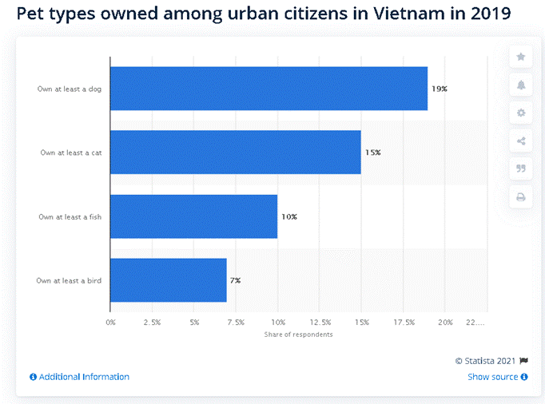
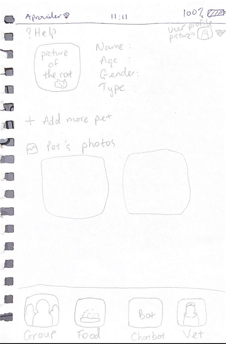
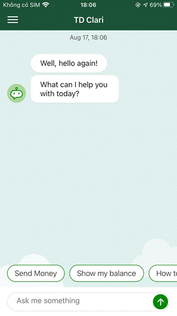
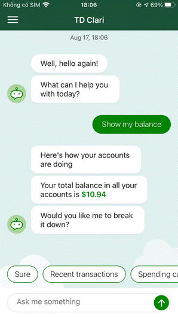

Duong My Uyen
08/22/2021
s3904418
Course code: COSC2803
Lecturers name: Long
Nguyen Minh
I declare that in
submitting all work for this assessment I have read, understood and agree to
the content and expectations of the Assessment declaration.
This report is about the IT World.
The content of this report is my idea of making Android software to monitor the
health of cats. Technical technologies are also discussed and researched about
the functionality that would be involved in this application. The last part
will be to learn about the work of IT professionals and feedback from
classmates.
In
the IT field, working in a group is crucial and each collaboration of the
member is also necessary. I have not thought of the team
name yet, I will discuss it with my team after forming a group with them
because I cannot decide it by myself. However, if I could just name my team, I
would name the Penguin Gang, because in nature, the penguin always live in a group a go together, therefore I wish my team
members could go over our problems and obstacles together, not leaving any
members in the team.
Therefore,
the most basic trait that a member of my team must have is
that everyone is responsible for their work and completes the assigned tasks on
time so that it will not affect the project process. From the previous
assignment, my MBTI test result is an INFJ. I am an audacious type of learner,
a person who has a vivid imagination, and a fear of criticism. For that reason,
in my plan, I wish that my future team could have at least one extrovert
because they usually have many relationships and if there is an extrovert in
the team, it becomes easier to learn more information from classmates and the
team can refer to many different sources so that the project can be in a better
completion. Besides that, if in the group there can be a member who has a sense
of humor and is responsible at the same time, I think that can help the group
become more relaxed and in the assignment, we can come
up with new ideas. The members should be hard-working and creative which is
beneficial for building the project.
In this assignment, I use Google Docs to write my report,
then export it as an HTML file.
Link to the website:
Link to the GitHub repository:
Lots of people have pets nowadays,
mostly dogs and cats to make friends with them. As a cat person, I want to
develop an application for the cat owner to check the health care of the cat
(in physical and also mental health) combined with a chatbot, and veterans support. The project will be a cat health care app
that is developed on a mobile device that is available for both iOS and
Android, but I think I should make this app on one operating system first,
which is Android. The application will be built with a friendly interface that
can be used by any type of user who owns cats. (The beside picture is one of
the cats from the campus)
On my first day at RMIT, I was
surprised by the appearance of many cats at school and even students have a
Facebook page about them. Sometimes I see students stop to pet them and they
are very happy to see the cats. So I thought that the
presence of cats helped students reduce stress after school and deadlines. Moreover,
according to Statista, in Vietnam 2019, the number of cat-owners is just 4%
less than the dog-owner, which is 19% (Above is the bar chart from Statista of
the pet types in Vietnam). Therefore, I believe that the design of this project
will help the volunteers who care for cats on the campus, as well as the cat
owners, to easily monitor their health and care for them properly.
The main function of the application
is to check cat health care. When using the app, users have the option of
signing in or logging in as a guest. The software will prompt the user to input
their email address and password while logging in.
After logging in, the app's main screen will
provide some basic information about the cat, such as its name, weight, breed,
gender, age, likes and dislikes, and so on...On top of that, there will be a
"Help button" for the user to click if they require assistance. When
the user clicks the arrow icon next to it, it will expose the user's account,
enable them to contact the help center or allow them to sign out. In general,
the app will keep track of the cat's physical health based on certain basic
concepts, such as how much time the cat spends drinking water, eating, and
recommending the amount of food, as well as the cat's nutritional balance, such
as what the cat should or should not eat.
The application will offer an
important feature that will allow the user to contact their nearest veterinary
hospital, which will be presented in the bottom right corner of the screen.
When users click on it, a list of nearby veterinarians will appear, along with
their phone number and address. Its purpose is to show the user the path to the
nearest veterinarian if the cat has a major health concern.
Another feature that I think would
be helpful for a group of people to raise a cat or for family members to track
their cat's condition is the "joining in the group" function, which
enables users to create groups with people they know or family members to the
group to jointly monitor their cats' health. It can not only add the individual
to a group, but it can also allow members of the group to chat with one
another. It will appear as a small icon in the bottom left corner of the
screen. This is to avoid a situation when a group of individuals feeding a cat
doesn't know whether or not the animal has eaten, resulting in the cat being
fed more meals or going hungry.
In addition, there will be a
function located next to the add-in group function called Food, this function
is for the users to track by themselves to check the cats diet. In order to
remind the owner to feed the cat and the user must click "fed" after
feeding the cat.
In addition to monitoring the health of cats,
this app also has a chatbot for the users, it will be located next to the Food
and water icon. To use this also will not be too complicated, the user clicks
start to chat with the chatbot, then select the keyword they want to receive
the support. For example, asking the chatbot if the cat has eaten yet.
Below is a paper prototype of the main screen.

To build this application for this
project, I believe I would need many tools and technologies required. First I would build a prototype to see how it would look
like in the final products using any kinds of prototyping tools such as Marvel,
Proto.io, etc. To build this application, Android Studio can be used to develop
Android applications. Its programming language in the software is Java, and it
can be debugged and tested. When downloading Android Studio, the user will
receive Android SDK, SDK manager, and many other accompanying tools that may be
used to develop an Android app. Database for android is recommended to use
SQLite, it is a free SQL database that saves data to a device text file.
Moreover, I will use GitHub and Atom for updating the code with my teammates
Some skills required to build this
project are decoding skills and being creative, able to predict the errors
users could make so that the app can be improved. In addition, programming and
debugging skills also need to be applied. To program this application
I need to learn Java programming language and learn about Database. Also when building the UI, I have to build a user-friendly
interface, such as clear fonts, use few colors (to be suitable for people with
color blindness). Many skills I believe in the future I can learn at this
university. In addition, I can learn more of these skills in books, open-source
online, for instance, YouTube is widely known for. When downloading Android
Studio, there are some tips provided for the users and I can learn from them.
If there is a first IT project I
want to do, I really want to do this project. As I said, I'm a cat lover and
really want to do something small for them because I can't take care of them
myself, I've also seen feral cats out there with no help and no when sold to
become other people's food. So if this project is
successful, I hope many people will accept it and help me develop as best as
possible. When many friends or people around me use this application, it
becomes my joy and motivation to create more products. The impact that I think
this product will bring is when people are more concerned and concerned about
those little animals, knowing how to take care of them properly.
Problems (Obstacles): The obstacles
that may occur during the project are built, first comes from the contents,
this is about cat health care so there will be veterinary knowledge that I do
not clear. Besides that, in my opinion, this project would take time to be
completed by myself, therefore, I need a group who has the same passion and
love for the animal.
Some IT ITtechs that are related
to this project:
What does it do?
Cloud
computing is widely used and we can see them almost everywhere. Technology
companies all use cloud computing for their business for building their
website, storing the data. We usually know cloud computing for storing our
files and documents and we can view them just by connecting to the internet.
From the emails you check every day to your phone's memory, it's all stored and
managed by the cloud. There are three types of cloud computing:
- Public cloud: the third party
provides computing services over the public Internet, available for everyone.
- Private Cloud: or internal cloud
or corporate cloud, offered the computing services to only selected users.
- Hybrid Cloud: this combines public
and private clouds
Cloud
computing is usually known for storing our files and documents and we can view
them just by connecting to the internet. From the emails you check every day to
your phone's memory, it's all stored and managed by the cloud. It can store
files, backup message,s or
even banking
Technology
is always evolving constantly, so I think in the future, cloud computing brings
more benefits to businesses and users. I believe cloud computing will be used
more widely. Cloud storage will have a larger capacity, which will help to
store more information. More and more companies are using cloud computing, so
it is expected that cloud providers would deliver additional data centers at
reduced prices as a result of the intense competition.
What is the likely
impact?
Cloud
computings potential impact can be on its security. Many companies do not
adopt cloud computing because of the worries of security. Businesses and
providers are most likely affected. However, at the present, the security has
been safer but not completely, but the users data can be somewhat more secure.
In addition, the more companies are using cloud computing, the more providers
appear. It leads to the cost of products becoming cheaper and more choices.
This can create jobs for employees to choose in the direction of cloud
computing.
How will this affect
you?
In
my daily life, cloud computing affects me a lot. Since I am a student, there
are many projects that need to be done on my laptop. Sometimes I stored my
important files for the future in a folder in Google Drive. The presence of
this storage makes my study easier, even if my computer crashes all the files I have backed up in Drive so I don't have to worry
about losing my important files.
As for my family, since they know
about this storage, they have also sent important photos to them in Drive,
which keeps their phones from getting overwhelmed because the storage is almost
full.
What does it do?
The state of the art of chatbots:
Natural Language Processing:
where the bot is taught to respond properly in a human-like natural language.
Developers have to train the bot multiple times, in the conversations and
interactions so that it would be more effective.
Contextual chatbots: when the bot
can figure out what the user intends to make better conversations with the
user. This would increase the user experience.
*Google Brain presented the state-of-the-art Google Brain
named Meena. Meena was trained using data gathered from social media chats,
which totaled 341 GBs of previously filtered text. Researchers have decided to
build SSA (Sensibleness and Specificity Average), a new metric created to
capture the majority of the key aspects of real discussions. The result of
Meena achieves a 79% score of SSA, 7% less than the human level.
At the present, the chatbot can be
used for customer support, setting the timer, to ask about the weather. For
example, customer support provides quicker information for the user and
addresses the problem to prevent overloading when employees have to receive too
many customers. Or even help the user with the bank issue (Showing balance,
sending money, etc)

Currently, the chatbot is very
human-like. I believe that in the future, the chatbot will feel more emotional
and more like a human. Moreover, it will be used more widely and can be more
helpful for customer support. Machine learning has a crucial part in creating a
chatbot because it is used to develop the bot language skill, able to hold the
conversations like humans.
What is the likely
impact?
Since the Chatbot is mostly known
for the help of customer support, it may help the entire company get good
reviews from customers, thereby increasing the company's revenue and getting
more potential customers. It can change the way people operate on a daily
basis, for example, Siri (Apple virtual assistant) when we can ask Siri to
perform actions for us without touching the device, set the timer without
manually going to the clock application, etc. For companies, this can affect
night shift operators, because problems can be solved by chatbots and possibly
reduce their jobs as it has been replaced by chatbots.
How will this affect
you?
Chatbots
are a very interesting topic. This makes me enjoy it a lot. I am an Apple user
and can get Siri to open an app I need that I cannot find on the home screen.
Also, I can ask Siri to turn on the alarm when I can't open the home screen.
Moreover, Siri can search for instant information if the user needs it. Using
chatbots helps me save more time when using customer support services when
there are small problems that chatbots can solve. For my friends, some of them
are music lovers and they use the chatbot to ask what kind of music they are
listening to. Other than that, they simply just want to talk with somebody but
they do not know who to talk with, which helps them to reduce stress and
entertain themselves.
In this part, I would love to interview the IT professionals
on campus. However, due to the lockdown, students cannot go to the campus.
Therefore, I would choose the second task to complete this part.
First video: Interview with Mark Zuckerberg on September 8,
2020
Talking Tech and Holograms with Mark Zuckerberg!
Summary: This is the ted-talk with a Facebook founder, Mark
Zuckerberg. The interview started with a short introduction about Mark and how
he spent time on his work. In the interview, they mainly talked about Oculus, a
brand of Facebook Technologies on VR, and the future of them on how people
could get easy access to the technologies, how it would be more portable. The
rest of the interview mentioned some basic questions such as what his favorite
non-Facebook app, and what kind of phone he was using.
1.What kind of work is done by the IT professional?
According to Mark, Mark's work was quite varied, every day he came to the
office and he would not know what he would do today, because many works would
be thrown into him, and Mark thinks it was interesting because his job was to
develop software that people use every day. Besides Facebook, Instagram, or Whatsapp, Mark is also working on Oculus, a brand of
Facebook Inc. He is trying to make VR more portable and functional. AR is being
worked on in the next few years.
2. What kinds of people does the IT professional interact
with? Are they other IT professionals? Clients?
Investors? The general public?
Mark works with Sheryl Kara Sandberg, a Chief Operating Officer (COO), their
partnership helps the company to grow and develop globally. However, most of
the time he does not spend time in the office, according to CNN. However, he
met with many famous people such as Obama, Pope Francis.
3. Where do the IT professionals spend most of their time?
For work, since Mark has many things to work with and he cannot finish
everything in one, he split the time to work with each theme. He spends most of
his time doing one thing before getting into another. With his family, he
spends much time with his family with two daughters and doing exercises.
4. What aspect of their position is most challenging?
As a CEO of Facebook, he may face many responsibilities. In 2018, Cambridge
Analytica accessed information from 50 million Facebook users and he had to
apologize to his users.
Mark Zuckerberg: Im really sorry that this happened
Extra source: (Since the link does
not answer questions 2 and 4 so I search for another source) A
Day in the Life of Mark Zuckerberg
Second video: A
day in the life of a software engineer
A
DAY IN THE LIFE OF A SOFTWARE ENGINEER
Summary: this is a 4-minute video of
Gyasi Lịne, a software engineer who uploaded
his video on July 19, 2018, to describe what one day of his job looks like.
Starting with his morning routine, who he worked with, and what he did during
the day, and ending with a tired face after a busy day.
1. What kind of work is done by the IT professional?
Gyasi checked email and met with interns. At 10:00 a.m
he has a stand-up meeting, he does mainly coding in
the office,
2. What kinds of people does the IT professional interact
with? Are they other IT professionals?
During the day Gyasi seems to work alone because mostly what he does is coding.
However, after he checked the email, he met with the interns and sometimes
interacted with his co-worker.
3. Where do the IT professionals spend most of their time?
Most of Gyasis time is for writing the code.
4. What aspect of their position is most challenging?
Since he spent time with coding, he had to face the challenge of solving the
bug which could take hours to see the bugs.
Third video: A day
in the life of a software engineer in Singapore | work from home
a
day in the life of a software engineer in singapore |
work from home
Summary: This video is from Gauri
Joshi, released on May 28, 2021, a software engineer in Singapore and working
from home. Her day started with a lot of routines, waking up, doing exercise,
writing a journal, then getting to work. In the evening she edited her video to
upload on YouTube and went to bed.
1. What kind of work is done by the IT professional?
Gauris works for that day were to address some pr comments, investigate why
her released feature was not functional, and wrote documentation. Like Gyasi,
she also had a standup meeting but this was an online meeting. In the
afternoon, she reviewed her pr and debugged.
2. What kinds of people does the IT professional interact
with? Are they other IT professionals?
On that day, she interacted with her teammates to discuss what work she had
done. In addition, she also had a call with her engineering manager to discuss
her progress and questions she had or feedback.
3. Where do the IT professionals spend most of their time?
Gauri spent most of her morning addressing the pr comments and balancing
between working and resting.
4. What aspect of their position is most challenging?
Working during the pandemic is tough for her and debugging makes it difficult
for her because she could not figure it out.
Fourth video: Day In
the Life of an IT System Admin (Security)
Day In the Life of an IT System Admin (Security)
Summary: The YouTube channel PushToProd talks about a brief introduction that an IT
System Admin does. In the middle of the video, he helped his co-worker and had
a meeting, then he had a small talk with a security engineer. He got home and
continued to work.
1. What kind of work is done by the IT professional?
His role is as an infrastructure engineer, he wrote
the script for the select notification and did some code.
2. What kinds of people does the IT professional interact
with? Are they other IT professionals?
He interacted with tooling and automatic developers, and infrastructure
analysts. They talked about what they had done and what kinds of problems they
were dealing with. He had a quick talk with security about patching. He also
met with a security engineer, having a short talk of what she did with her job.
3. Where do the IT professionals spend most of their time?
He spent his time helping his co-workers. Many problems his colleagues were
dealing with or having questions and he could help with their problems.
4. What aspect of their position is most challenging?
His works were busy when he met and consulting with lots of people which can cause
conflict between him and his clients.
Fifth video: Day in the Life of a
Japanese Game Programmer
Day in the Life of a Japanese Game Programmer
Summary: The video was recorded by
Paolo fromTOKYO, recording a 23-year-old programmer
who worked for the largest video game company Bandai Namco named Masa. Masa got
to work by train and had a quick breakfast while checking the email for
updates. Because Masa needed a high focus on his task, the YouTuber took a
short look around Masas workplace and waited until he went for lunch. Then he
continued to interview other employees. When Masa got home, he spent his time
building Gundam until midnight.
1. What kind of work is done by the IT professional?
He had a morning task in his office, and after lunch, he continued to do the
coding. At 2 p.m, Masa had a meeting with his
co-workers about what needed to be done and discussed problems in the future
and continued to code.
2. What kinds of people does the IT professional interact
with? Are they other IT professionals?
Masa met with his co-worker during the meeting who are also game programmers.
3. Where do the IT professionals spend most of their time?
Masa spent most of his time coding in front of the black screen from morning
until he got home.
4. What aspect of their position is most challenging?
In this video Masa was working a bit over time, however, he mentioned that when
they have big projects, he had to work more time than usual.
Sixth video: A Day in the Life of a
Web Developer
A Day in the Life of a Web Developer
Summary: This video was released on
September 26, 2020, by Chris Sean. He showed the viewer what a day in the life
of a remote web developer looks like. Then he showed his workspace and
introduced his new house.
1. What kind of work is done by the IT professional?
His work was usually coding and
having meetings with his colleagues, checking the email every time he started
to work
2. What kinds of people does the IT professional interact
with? Are they other IT professionals?
He also had his own business so, in
his working space, there were two sides for him, one was for building his
business, meeting with the clients, and also with his team, and another side
was used for coding.
3. Where do the IT professionals spend
most of their time?
He spent most of his time coding
and, more than half of his day was solving bugs which took much time and
brainpower.
4. What aspect of their position is most
challenging?
His job was busy and before he bought the house, it was tough for him to go to work
because it made him travel a lot.
Feedback
from Bui Quang An:
In general, I think your app idea is good and practical. There are a few
places you need to pay attention to in the description. To me, in order to get
cat information, the app should scan the image of that cat and then enter the
names of things, but if I only enter the information, it will not know how many
cats have the same name or sometimes the same weight. rank. Secondly, I think
you should give more pictures of your app. I was a bit confused when I read
your post, so I think adding more pictures will help readers better understand
your ideas. Third, I think you should be more specific about the chatbot part,
like, it helps the owner remind the cat to eat, give suggestions to help the
cat get better,
Feedback
from Pham Viet Hao:
Overall I think your project is fine, it is attractive and I
am excited to see the final products. However, in the description part, the
tracking food function is interesting, but if you can tell
more about how your app track the cat would be better. Moreover, in the IT technologies part, I think you should tell how the
technologies related to your application
REFLECTION:
The feedback is very useful for me,
it is right and I absolutely agree with them. From Ans
feedback in the description part, I did not mention the feature that users can
upload their own cats picture. About the picture of my app, I only upload the
prototype of the main screen but not all of the other features, I will keep in
mind that I should draw a paper prototype of other functions more than the main
screen. Last but not least, the ChatBot function was
not described in detail, I will think more of it and add more functions for the
Chatbot. For Haos feedback, his idea was also extremely helpful and essential
for my report. In the tracking for the cat, the user has to record the meal in
the app manually, by clicking the check box, I was not discussing it in detail.
For my future description of my products, I will try to make them as detail as
I can. For the IT technologies part, he was right that
I should link the connection between my projects with these technologies, in
order to give a brief understanding of the links between them. This feedbacks are really helpful, even a successful
application also needs feedback from the user to make it better. I believe
there is no app that is perfect, only better.
Brownlee, M. (2020, September 17). YouTube. Talking Tech and Holograms with
Mark Zuckerberg! Retrieved August 18, 2021, from
https://www.youtube.com/watch?v=eAagtcAup0o&list=PLBsP89CPrMePNK7yIxcyRdiIFentQVHra&index=3
Day in the
Life of a Japanese Game Programmer. (2019, November 30). YouTube. Retrieved August 18, 2021,
from https://www.youtube.com/watch?v=e_TxH59MclA
Day In the
Life of an IT System Admin (Security). (2019, August 3). YouTube. Retrieved August 18, 2021, from
https://www.youtube.com/watch?v=OfAcLjgQUcQ
Joshi, G. (2021, May 28). a day in the life of a software engineer in singapore | work from home. YouTube. Retrieved August
19, 2021, from https://www.youtube.com/watch?v=TMHw-Gefui4
King, V. (2013, October 15). 6 Reasons Why Companies Should Use Cloud
Computing. whitehat virtual. Retrieved August 18,
2021, from
https://blog.whitehatvirtual.com/6-reasons-why-companies-should-use-cloud-computing?fbclid=IwAR3nuRo477gjHhMlpv-QkC7BNBRI2a-UAzwcqV7A68IM8En6d3XkicA68tI
Makadia, M. (2019, May 1). 5 Reasons Why Your Chatbot Needs Natural
Language Processing. towards data science. Retrieved August 18, 2021, from
https://towardsdatascience.com/5-reasons-why-your-chatbot-needs-natural-language-processing-ed20fb0a3655?fbclid=IwAR3nuRo477gjHhMlpv-QkC7BNBRI2a-UAzwcqV7A68IM8En6d3XkicA68tI
Mark
Zuckerberg: Im really sorry that this happened. (2018, March 22). YouTube.
Retrieved August 18, 2021, from https://www.youtube.com/watch?v=G6DOhioBfyY
Nguyen, N. M. (2020, December 9). Pet types owned among urban citizens in
Vietnam in 2019. Statista. Retrieved August 19, 2021, from
https://www.statista.com/statistics/1114699/vietnam-pet-ownership-among-urban-citizens/?fbclid=IwAR1Z7h0cvCp2FpeJs0g4VBjnI1Ka0eQ13hLuHw8_KXc-J6I38lqkg3UNt2U
Thomas. (2020, May 4). The future of chatbots? Fast data science.
Retrieved August 18, 2021, from
https://fastdatascience.com/what-is-the-future-for-chatbots/?fbclid=IwAR0fBATAhC5QYgkKdS_bFK7WEDjDcdIZTbnumFoI5cANlnfrI-OzN_0fyC8
What Is
Cloud Computing and the Top Cloud Technologies to Look Out for in 2021. (2021, July 15). Simplilearn. Retrieved August 19, 2021, from
https://www.simplilearn.com/cloud-technologies-article?fbclid=IwAR2s15c1DMeuWbYhUtN87ilts8cOs2K0q0aRVcOa8BxJrBNF58T7QJFJX3k
Zone, L. (2021, April 30). A Day in the Life of Mark Zuckerberg.
YouTube. Retrieved 8 18, 2021, from
https://www.youtube.com/watch?v=2DdDE4i5eJE&fbclid=IwAR3g_gtSTz7QUw0qcDiWmefgHC9mpDKwzIikurlYEO1U2ApewiigCC6fNsI
Future of
cloud computing - 7 trends & prediction about cloud. DataFlair.
(2019, February 23). Retrieved August
18, 2021, from
https://data-flair.training/blogs/future-of-cloud-computing/?fbclid=IwAR14yTK2xvv6KSka9zSVCvRl8NnDMXUoz_RmRppVIAZ1Q1UCcigyzvBcfds.
Adiwardana, D., Luong, M.-T., So, D. R., Hall,
J., Fiedel, N., Thoppilan,
R., Yang, Z., Kulshreshtha, A., Nemade,
G., Lu, Y., & Le, Q. V. (2020, February 27). Towards a human-like open-domain chatbot. arXiv.org. Retrieved
August 18, 2021, from https://arxiv.org/abs/2001.09977.
Sean, C. (2020, September 26). A Day
in the Life of a Web Developer. YouTube. Retrieved August 20, 2021, from
https://www.youtube.com/watch?v=SmxrUmaAOz0